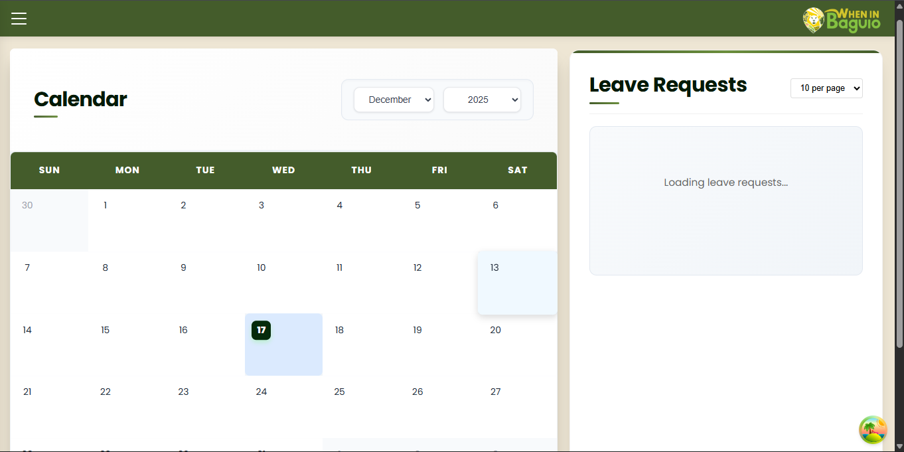
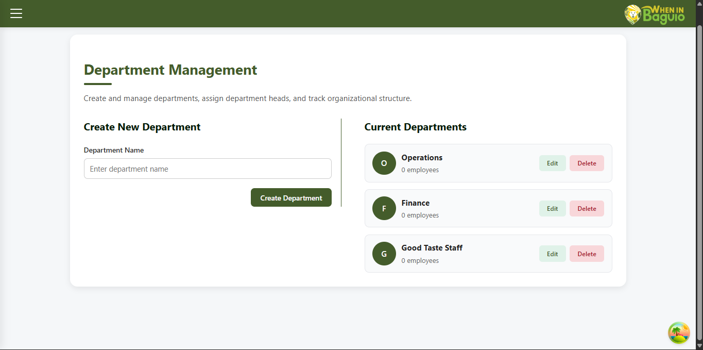
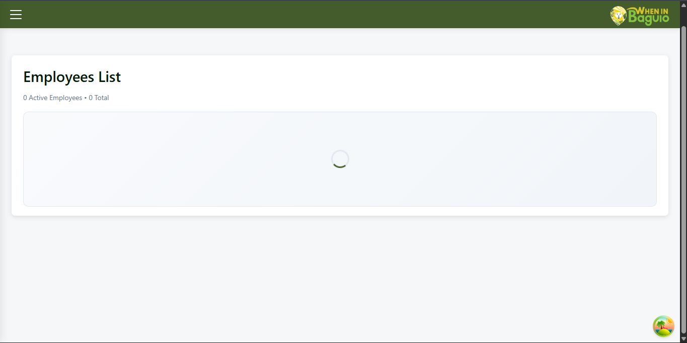

System Interface
A deep dive into the administrative and user modules




Key Features
Leave Management
Automated request system allowing employees to apply for leaves and admins to approve in real-time.
Departmental Control
Organize employees into specific departments to track productivity and staffing requirements.
Invitation System
Secure admin onboarding via email invitations to maintain system integrity.